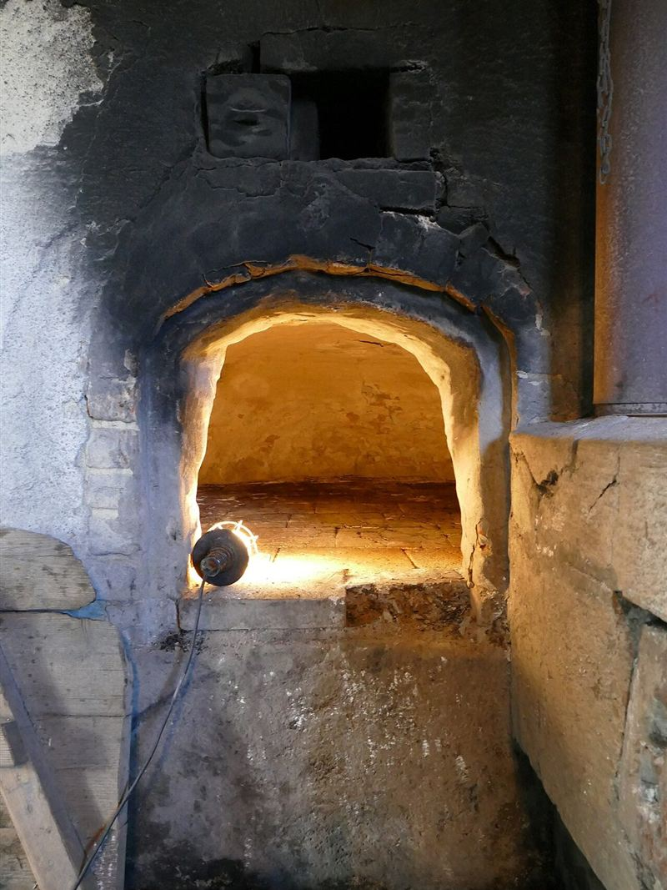
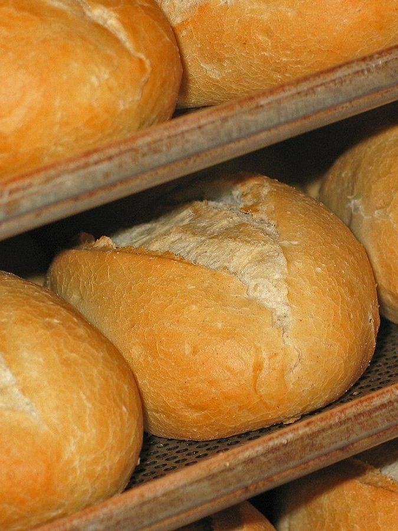
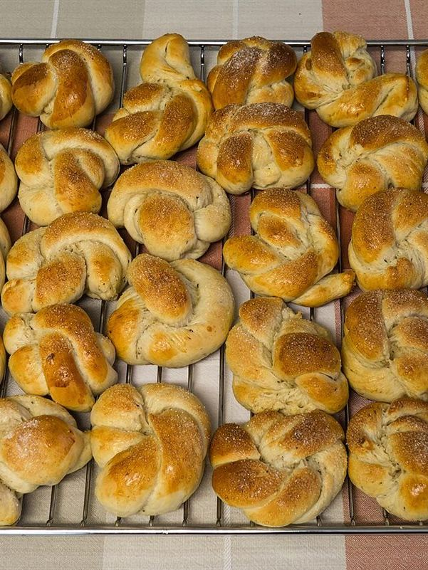
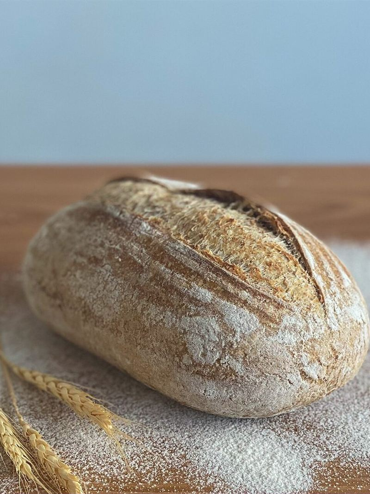
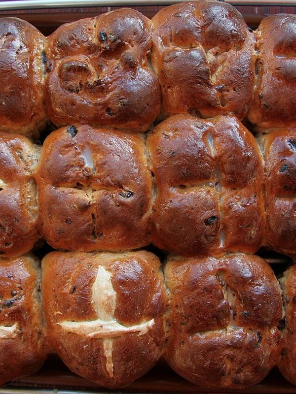
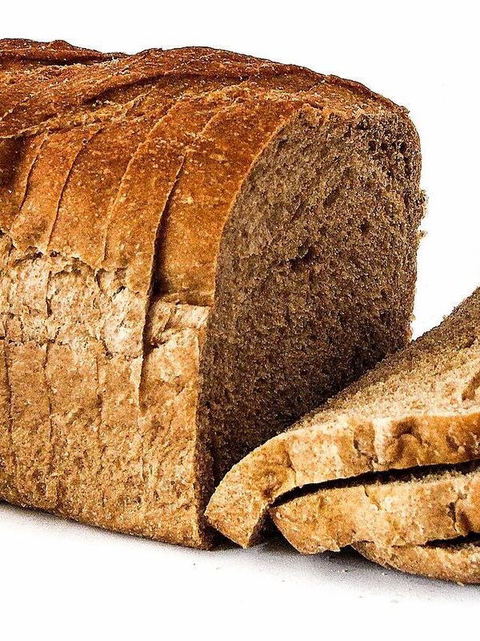

焼き色を、
ゆっくり眺める。
群馬県桐生市にある、焼き菓子・スイーツのお店です。
営業時間やメニューなどの詳しい情報は、いまのところ準備中です。気になることがあれば、お電話かInstagramからお気軽にお問い合わせください。
電話する Instagramを見る
焼き色のスケール
生地の白から、こんがりとした茶色へ。焼き色の移り変わりを、5枚の写真で並べました。(スマホでは横にスクロールできます)





掲載写真はフリー素材のイメージで、店舗の実際の写真ではありません。他の地域で撮影された写真や、撮影地が不明な写真を含みます。
制作側の案です。お店の考えを示すものではありません。
焼き色の階調
このサイトは、焼き上がりまでの色の移り変わり(粉の白、バターの色、キャラメル色、深い焼き色)をページ全体の見せ方にした、制作側の案です。
お店の考えやこだわりを表すものではありません。実際の雰囲気は、お店へ直接お確かめください。
お店の情報
- 営業時間
- 準備中(お問い合わせください)
- 定休日
- 準備中(お問い合わせください)